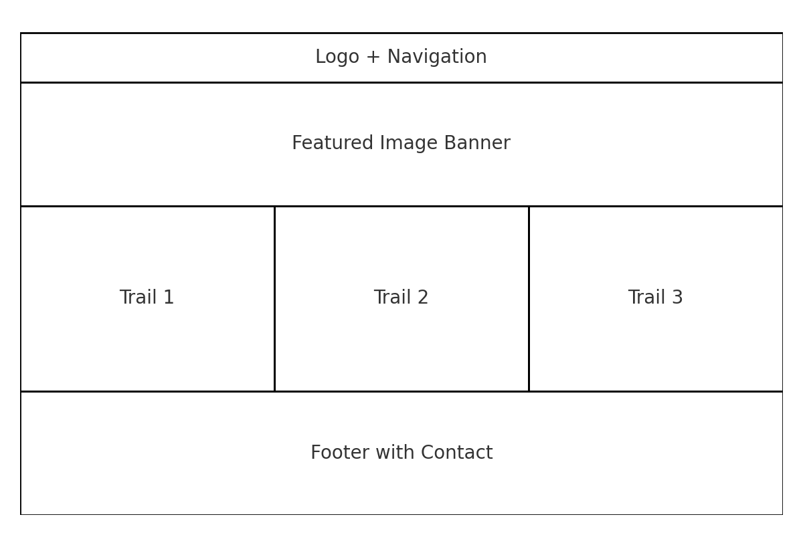

Site Name
Riverbend Trails was chosen because it clearly represents the fictional trail system that the site highlights. The name evokes nature, outdoor recreation, and exploration, aligning with the project’s theme.
Site Purpose
The purpose of the Riverbend Trails website is to provide information about local hiking and biking trails. The site will highlight features of the trails, display trail data dynamically, and offer a contact form for visitors to get in touch or share feedback. It is also a project to demonstrate responsive design, accessibility, and dynamic JavaScript features.
Scenarios
- “Which trail is best for a short family hike with children?”
- “Where can I find contact information to ask about trail conditions or events?”
Color Schema
- Dark Green (#2c5f2d): Used for headings, logo text, and navigation elements to represent nature and stability.
- Light Green (#97c47c): Used for accents, borders, and highlighting sections for freshness and vibrancy.
Typography
Georgia (serif): Used for headings to give the site a natural, classic look.
Arial (sans-serif): Used for body text for readability and clarity on both desktop and mobile.
Wireframes
Mobile View:
Mobile Wireframe — stacked layout with logo, navigation, trail highlights, and contact link.
Desktop View:
Desktop Wireframe — horizontal navigation at top, featured trail image, grid of trail cards, and footer with contact form link.